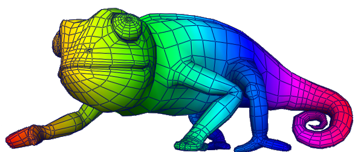
Vertex Chameleon
v1.6.92
Last Updated 5 September 2013
Contents
1. Introduction
Vertex Chameleon is the ultimate vertex colour toolset for Autodesk Maya!
Vertex colours are widely used in games for platforms where there isn't much memory for textures. Such platforms include: Nintendo Wii & DS, Sony PSP & Playstation 2, internet and mobile phone games. Even next-gen platforms such as PC, Xbox360 and PS3 still use vertex colours to help improve performance and save vital memory.
Vertex Chameleon gives you complete control, real-time feedback and a wealth of functionality, resulting in increased productivity and better results.
1.1 Features
Other:
2. Getting Started
2.1 Requirements
The following versions of Maya are supported:
Microsoft Windows:
Apple Mac OS X:
Linux:
Please let us know about your platform requirements.
2.2 Installation
2.2.1 Windows Installation
Vertex Chameleon is downloaded as an executable installer file.
Automatic Licensing during Installation
You can create a text file "license.txt" containing the license key in the same folder as your installer. When the installer runs it will find this file and automatically license the product.
Silent Installation
You can run the installation silently by specifying the "/S" parameter.
2.2.2 Windows Uninstalling
Simply run the uninstaller from the Start Menu in "RenderHeads > Vertex Chameleon 1.0".
2.2.3 Mac Installation
2.2.4 Mac Uninstalling
Simply delete the folder containing the plugin, and remove the VertexChameleonPluginModule.txt from your maya.app/Contents/modules folder.
2.2.5 Linux Installation
2.2.6 Linux Uninstalling
Simply delete the folder containing the plugin, and remove the VertexChameleonPluginModule.txt from your Maya/modules folder.
2.2.7 Network Installation
Vertex Chameleon can also be installed centrally on a server with all the clients just accessing that single instance of the software. This makes maintaining software versions and upgrades much easier in a multi-user environment.
On the server copy over all the Vertex Chameleon files and make the folder publically available.
For each client you'll need to create an entry for the plugin in their /modules folder pointing to the plugin location on the server.
For more information on how to do this please contact RenderHeads.
2.3 Launching the Plugin
To launch the plugin type "RH_VCP" or "RH_VertexChameleon" into the command-line window in Maya. This will display the main Vertex Chameleon window.
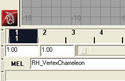
To save typing, you may want to add this command to your shelf. The user interface has a button in the settings tab labelled "Add to Shelf" which will add this command to the current shelf using it's own icon graphic.
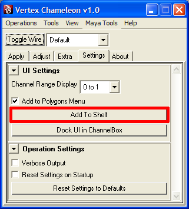
The button icon added to the shelf:
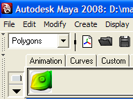
2.4 Licensing
Vertex Chameleon won't work until it has been given a valid license key.
To obtain and install a license key:
Your copy of Vertex Chameleon will then be licensed, as indicated by this window:
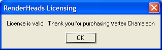
If this doesn't appear and you're having problems getting your license to work, please contact RenderHeads Support (support@renderheads.com).
2.4.1 Licensing Notes
3. User Interface
3.1 Main Window
The main UI for Vertex Chameleon looks like this:
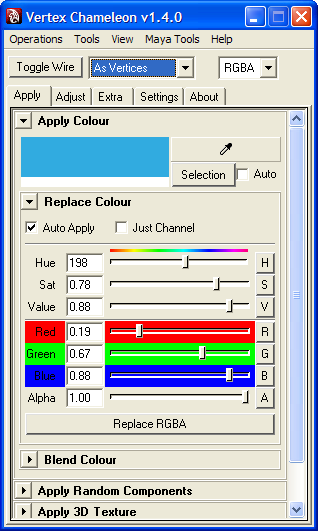
This window contains all the tools and operations in a compact manner.
The first 3 tabs, "Apply", "Adjust" and "Extra" contain all of the vertex colour operations. "Settings" contains global settings for the plugin and "About" contains additional information such as credits, licensing and links to documentation.
3.2 Shelf Shortcut
You can easily create a shortcut icon on your shelf to launch the main Vertex Chameleon window. In the "Settings" tab choose "Add to Shelf":
The button icon added to the shelf:
3.3 Menu
It is also possible to add a Vertex Chameleon menu to your "Polygons" menu ("Modeling" menu in older versions of Maya).
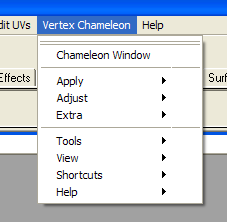
This is set in the "Settings" tab:
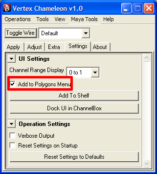
3.4 Dock to ChannelBox
It is possible to dock the main Vertex Chameleon window to the channelbox. This prevents the main window from overlapping the viewport:
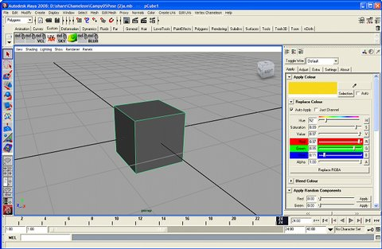
This is set via the "Settings" tab:
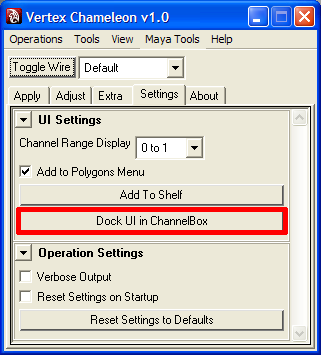
3.5 Tear off Windows
While the main window provides all the operations in one place, sometimes only a specific tool is needed. All the operations can appear in their own windows by choosing them from the menubar.

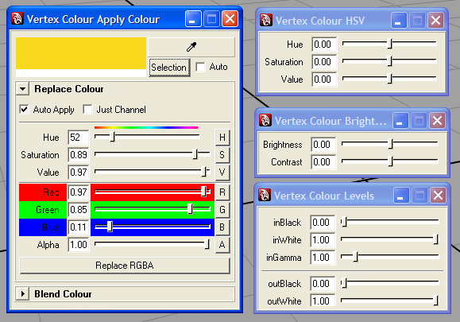
3.6 Shortcuts to Maya Tools
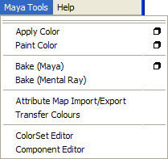
For convenience, shortcuts to most of the Maya internal vertex colour tools are provided via a drop-down menu.
4. Operations & Tools
4.1 Basics
Before we look at the individual tools we will explain some of the common UI elements found throughout the tools.
4.1.1 Toggle Wireframe Display
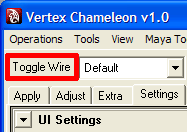
The "Toggle Wire" button will toggle on and off the wireframe display of selections. This is very handy as it makes selected regions more visible. Unfortunately there is no way to hide the display of the selected components. Wireframe display is automatically turned off while dragging the real-time sliders to increase visibility of the mesh. Wireframe state is enabled again when the Vertex Chameleon window closes.
Here is a mesh with and without wireframe on selection:
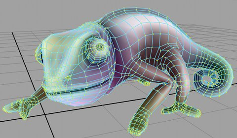

4.1.2 Force Component Type
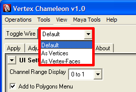
Internally, Vertex Chameleon operates on your selection either at the vertex level or the vertex-face level. This can be chosen from the drop-down menu on the main UI window.
It is often desirable to switch between vertex or vertex-face mode. Vertex mode will write to all the vertex colours in your selection, while vertex-face will only operate on the vertex-faces of your selection - which is very useful for when you want to paint only inside selected faces.
By default this is set to "Default" where Vertex Chameleon will try to guess which mode you want to work in based on your selection type. Here is how this default mode behaves based on different selection types:
Selection Type | Component used |
Object | Vertex |
Vertex | Vertex |
Face | Vertex-Face |
Edge | Vertex-Face |
Vertex-Face | Vertex-Face |
UV | not supported |
4.1.3 Apply Button & Slider
Most filters and operations in Vertex Chameleon have an Apply button and slider.
The Apply button simply applys the operation completely. The slider can be dragged from 0 to 100% and will blend the result into the original colours gradually.
When is it useful to use the slider / button to apply an operation?
The slider can be very useful for testing temporary settings as it can simply be returned to zero if the filter doesn't produce the expected result. This is faster than using the apply button as it won't require an Undo to get the previous result back. The button though is useful if the mesh is very complicated as the slider would be too slow to update in real-time and would be difficult to work with.
4.1.4 RGBA Colour Box
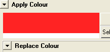
All colour boxes in Vertex Chameleon are split into 2 parts so they can represent an RGBA colour. The top part shows the RGB colour, the bottom strip is always greyscale and represents the amount of alpha (transparency). Usually clicking on these will bring up the colour chooser.
4.1.5 Blending
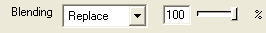
Most filters and operations in Vertex Chameleon have blending options. These options control how the final result of the filter / operation will blend with the original colours.
The slider value specifies what percentage of the final result will come from this operation. For example:
The blend mode is chosen from the drop-down menu and offers the following modes:
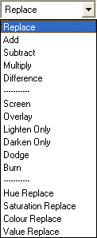
4.1.6 RGBA Channel Mask
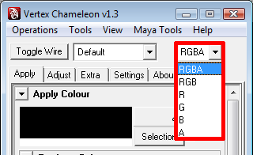
This drop-down menu selects the channels which are affected by all Vertex Chameleon operations. For example if "A" is selected only the alpha channel can ever be changed and RGB channels can not be altered by any of the operations.
4.2 Apply Operations
4.2.1 Apply Colour
This operation is used to replace colours in your selection.
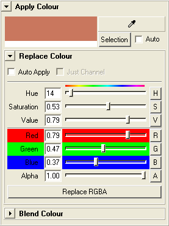
On the top there is the colour box which displays the final colour. This box is split into two pieces. The top piece shows the RGB colour, while the bottom piece represents the alpha value of the colour.
The eyedropper icon is used to pick a colour off the screen.
The "Selection" button samples all the colour in the current selection and sets the colour box to the average of these colours. It has an "Auto" option which when enabled will update the colour box each time the selection changes.
The sliders are used to change the colour in the colour box. Each slider has a button which will replace only the specific colour channel in the selection with the value of that slider.
The "Replace RGBA" button will apply the colour to the selection.
"Auto Apply" will apply the colour to the selection automatically as the sliders are moved. Having the "Just Channel" option ticked will only apply the colour channel of the slider that is moving and not the overall colour displayed in the colour box.
There is also a "Blend Colour" collapsible frame:
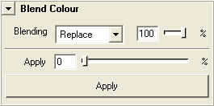
This will blend the colour in the colour box based on the blend mode and opacity settings set.
4.2.2 Randomise Components
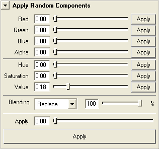
This operation adds and subtracts a random amount of colour to your selection. The amount of randomness is specified per channel, and the randomness is applied differently depending on the selection type.
A selection of vertices will randomise each vertex.
A selection of faces will randomise each face.
A selection of objects will randomise each object.
4.2.3 Apply 3D Texture
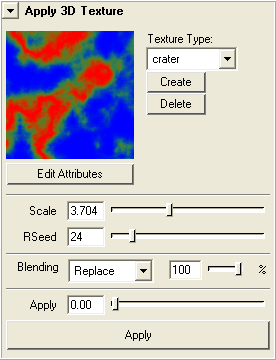
The Apply 3D Texture operation blends a procedural 3D texture into the selected mesh colours. This is very useful for adding noise and variation to existing colours.
First the type of 3D texture must be chosen from the Texture menu. Pressing the "Create" button will create this 3D texture and now it is ready to be applied to your scene. This acually adds a texture to your scene, so you can delete it at any point by pressing "Delete".
Click on the image of the texture to alter it's properties.
The Scale slider modifies the size of the texture in the 3D world.
"RSeed" is the random seed and can be changed to get slightly different versions of the texture.
Note: You do not need UVs to use 3D textures, their value is determined by the position of the vertex in the scene.
4.2.4 Gradient Tool
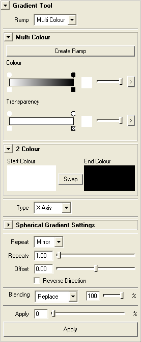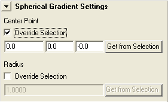
The gradient tool applies a linear gradient between two specified colours or using a ramp of colours.
First the choice must be made between either a multi colour ramp or a two colour ramp.
Multi Colour Ramp
The multi colour ramp allows great flexibility when creating ramps. By clicking on he ramp points can be added or removed. The slider on the right is used to set the colour of each point. The ramp can be zoomed into using the ">" button on the far right.
Two Colour Ramp
The two colours display their RGB value in the top part of the rectangle, and their alpha value in the lower part. Clicking on the start and end colour boxes launches Maya's colour chooser window.
Gradients
There are four types of gradients which can be chosen from the "Type" menu:
The axis gradients are drawn from the minimum to the maximum point of your mesh in the specified axis. The spherical gradient has some extra options, such as the centre point of the gradient and the radius.
Standard gradient options follow. "Repeats" specified how many times the gradient will loop between the start and end points. "Repeat" specifies how this loop will be drawn. There are three options:
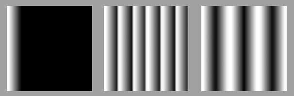
3 example gradients, each with "repeats" set to 6, and with a different repeat mode set (left to right): Clamp, Wrap & Mirror.
4.2.5 Mental Ray Baking
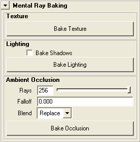
These operations provide a quick and easy way to use the Mental Ray baker to accomplish the most common baking tasks.
Why not just use Mental Ray baking directly?
This operation is aware of the Vertex Chameleon layering system, and so bakes into the correct layer. Normally when using Maya vertex colour tools (such as the bake) on a mesh with vertex colour layers, Maya doesn't know the correct layer to write to. If you want to use Mental Ray you must make sure you type in the name of the colorSet (layer) you want to bake to. If you aren't using the layering system in Vertex Chameleon then there is no problem.
"Bake Texture" bakes any texture that is applied to the object into the vertex colours, disregarding any lighting in the scene.
"Bake Lighting" only bakes the direct lighting into the mesh. There is an option to bake the shadows as well. Baking shadows will only work if the lights have shadowing enabled (setup via the attribute editor).
"Bake Occlusion" bakes ambient occlusion into the vertex colours. Only a few options are exposed as these are the most frequently used.
4.3.1 Adjust RGBA
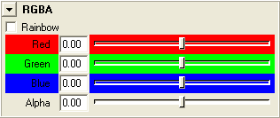
Dragging the sliders left decreases the amount of that colour in your selection, while dragging right will increase it. The Rainbow checkbox adds in Yellow, Cyan and Magenta sliders:
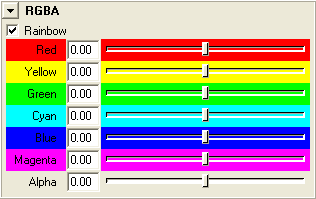
4.3.2 Adjust HSV

Allows real-time adjusting of hue, saturation and value (similar to brightness, however it doesn't alter the hue or saturation). Dragging the sliders left decreases the amount of that colour in your selection, while dragging right will increase it.
4.3.3 Brightness / Contrast
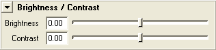
Allows real-time adjusting of brightness and contrast. Dragging the sliders left decreases the amount of brightness/contrast in your selection, while dragging right will increase it.
4.3.4 Levels
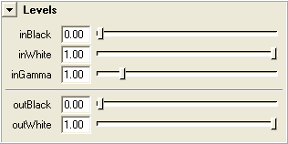
The Levels operation adjusts brightness and contrast, but offers more control than the Brightness / Contrast operation.
4.3.5 Filters
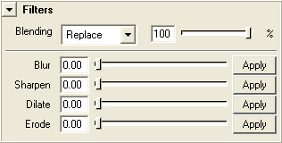
Filters process components in relation to neighbouring components. Blur averages the surrounding components, Sharpen does the opposite of this. Dilate replaces darker colours with any surrounding lighter colours. Erode replaces lighter colours with any surrounding darker colours.
What are dilate & erode?
Dilate can be used to make brighter colours take over darker colours.
Erode can be used to make darker colours take over lighter colours.The apply buttons will apply the filter 100%.
4.3.6 Nudge Tool
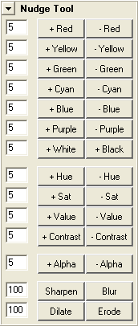
The nudge tool is useful for rapid tweaking and when the mesh is too complicated to use the real-time sliders. It provides a nice simple interface to do most tweak operations.
Each row has a pair of complementary buttons and a slider. The button on the left will increase the effect while the button on the right decreases it. The value is the amount of effect the buttons have each time they are pressed.
4.4 Extra Operations
4.4.1 Clamp
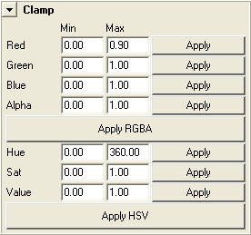
Clamp colour channels in your selection to the specified range. Values below the minimum will be set to the minimum, values above the maximum will be set to the maximum.
4.4.2 Saturate
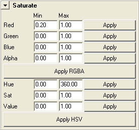
Values below the minimum will become 0.0 and values above the maximum will become 1.0.
4.4.3 Channel Swap
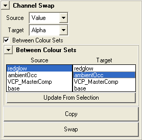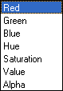
Copy or swap colour channels. Channels can also be copied between colour sets.
4.4.4 Channel Contrast
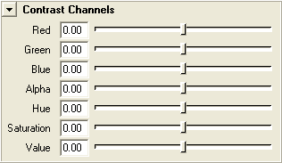
Increase or decrease contrast in individual colour channels.
4.4.5 Channel Inverter
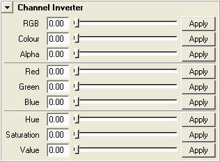
Channel inverter inverts individual colour channels much the same as a film negative is inverted. Move the sliders to gradually invert your selection, or use the Apply button to fully invert a specific channel.
4.4.6 Posterize
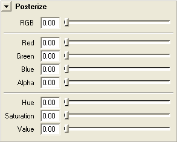
The posterize operation removes colours, reducing the number of unique colours. It goes from removing very subtle colours to finally removing the more obvious colours.
4.5 Tools
4.5.1 Colour Inspector
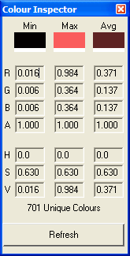
The Colour Inspector tool dynamically updates it's statistics whenever the selection changes. For the current selection it shows the lowest, highest and average colour channel values, as well as a count of the number of unique colours.
4.5.2 Layers
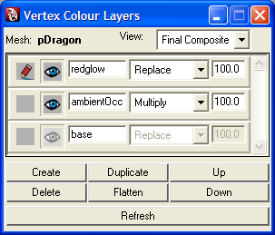
Vertex Colour Layers is an extension of Maya's vertex color sets, adding Photoshop-style blend modes, visibility toggling, opacity value, alpha channel blending and real-time rendering of the final layer's composition.
The currently selected mesh is shown at the top of the interface. Only a single mesh can be selected at a time for the Layers editor to work.
Layers order can be changed by using the Up and Down buttons which will shift the current active layer up or down in order.
The "View" menu allows you to choose between "Final Composite" and "Active Layer". "Final Composite" displays the result of all the layers blended together. "Active Layer" displays only the currently active layer.
Each layer row consists of multiple parts:
Each layer is a Maya vertex colour set. Vertex Chameleon creates a colour set called "VCP_MasterComp" into which it calculates all the blending of the layers.
Note: Layers is not available in Maya 6.5 or earlier. This is because vertex colour sets were only introduced from Maya 7.0.
Note: Layers only works with a single mesh selected.
A note about using the vertex colour tools of Maya with the layering system
All the vertex colour tools in Vertex Chameleon will obey the layers correctly, however this is not the case for Maya's own tools. If you're using tools such as Prelight you need to manually set the colorset (layer) you wish to use. This is done via the ColorSet Editor.
If you combine meshes with layers the layers will more likely break. The same will happen when using the Extract or Duplicate Face operation.
4.5.3 Colour Swatch
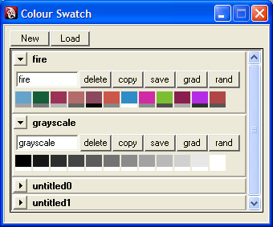
The Colour Swatch is used to store important colours so they can be easily retrieved later on.
Use the "New" button to create a new swatch of ten colours, or the "Load" button to load an existing .col swatch file.
Left-clicking on a colour in a swatch will set the Apply Colour tool to that colour.
Right-clicking on a colour will assign the colour from the Apply Colour tool into that swatch slot.
The "delete" button deletes the swatch.
The "copy" button will clone the swatch and add it to the swatch list.
The "save" button allows you to save the swatch to a .col file.
The "grad" button generates a smooth gradient in the swatch between the first and last colours.
The "rand" button will randomise all the colours in that swatch.
5. Scripting
The plugin can be scripted using MEL for integration into a tool-chain or for create macros. The main command is "RH_VertexPolyColour" and it has a lot of parameters to control which operation it performs.
Main Flags
-op -operation [INT]
Specified the major operation the command should run. The list includes:
-fc -forceComponent [INT]
This will force command to treat the current selection as a certain type of component during all operations.
Blending Flags
-bl -blend [FLOAT]
Percentage of blend, defaults to 100
-blm -blendMode [STRING]
The mode for blending. The default is "replace". Mode are:
-mab -masterBlend [FLOAT]
The percentage of the destination colours to blend with the source colours.
Channel Flags
-cmk -channelMask [STRING]
The string contains the letter of the channels to use. The default is "RGBA". Any channels in this mask are written to, others are left unchanged. This affects all operations.
-r -colorR [FLOAT]
Red value between 0.0 and 1.0
-g -colorG [FLOAT]
Green value between 0.0 and 1.0
-b -colorB [FLOAT]
Blue value between 0.0 and 1.0
-h -colorH [FLOAT]
Hue value between 0.0 and 1.0
-s -colorS [FLOAT]
Saturation value between 0.0 and 1.0
-v -colorV [FLOAT]
Value value between 0.0 and 1.0
-a -colorA [FLOAT]
Alpha value between 0.0 and 1.0
Brightness & Contrast Flags
-c -contrast [FLOAT]
Contrast value between 0.0 and 1.0
-bri -brightness [FLOAT]
Brightness value between 0.0 and 1.0
-cor -contrastR [FLOAT]
Contrast in redchannel, value between 0.0 and 1.0
-cog -contrastG [FLOAT]
Contrast in green channel, value between 0.0 and 1.0
-cob -contrastB [FLOAT]
Contrast in blue channel, value between 0.0 and 1.0
-coa -contrastA [FLOAT]
Contrast in alpha channel, value between 0.0 and 1.0
-coh -contrastH [FLOAT]
Contrast in hue channel, value between 0.0 and 1.0
-cos -contrastS [FLOAT]
Contrast in saturation channel, value between 0.0 and 1.0
-cov -contrastV [FLOAT]
Contrast in value channel, value between 0.0 and 1.0
Levels Flags
-lev -levels [FLOAT] [FLOAT] [FLOAT] [FLOAT] [FLOAT]
These values represent the levels parameters: inBlack, inWhite, inGamma, outBlack, outWhite.
Randomise Components Flags
-rnr -randomRGB [FLOAT] [FLOAT] [FLOAT]
Randomises the RGB channels by the amounts passed in. Values between 0.0 and 1.0.
-rnh -randomHSV [FLOAT] [FLOAT] [FLOAT]
Randomises the HSV channels by the amounts passed in. Values between 0.0 and 1.0.
-rna -randomAlpha [FLOAT]
Randomises the alpha channel by the amounts passed in. Values between 0.0 and 1.0.
3D Texture Flags
-t3n -texture3DNode [STRING]
Name of the 3d texture node to use
-nsx -noiseScaleX [FLOAT]
Scale to sample the texture at along the X axis
-nsy -noiseScaleY [FLOAT]
Scale to sample the texture at along the Y axis
-nsz -noiseScaleZ [FLOAT]
Scale to sample the texture at along the Z axis
-t3o -texture3DOffset [FLOAT] [FLOAT] [FLOAT]
3D sampling offset position. This works as a random seed
Gradient Flags
-grt -gradientType [STRING]
Specified the type of gradient. Options are:
-grr -gradientRepeat [STRING]
The type of wrapping / repeating to use. Option are:
-grs -gradientRepeats [FLOAT]
The number of times to repeat the gradient. This is like a scale value.
-gro -gradientOffset [FLOAT]
The offset to start sampling the gradient from.
-grv -gradientReverse
If this flag is present the gradient will be reversed
-gor -gradientOverrideRadius
-grq -gradientRadius [FLOAT]
This is an option only for sperical gradients. It specifies the radius of the gradient. If it is not specified the radius will be taken from the selection.
-goc -gradientOverrideCenter
-grp -gradientStartPos [FLOAT] [FLOAT] [FLOAT]
This is an option only for sperical gradients. It specifies the center in 3D space of the gradient. If it is not specified the center will be taken from the selection.
-gr1 -gradCol1 [FLOAT] [FLOAT] [FLOAT] [FLOAT]
Specify the RGBA of the first colour in a 2-colour gradient.
-gr2 -gradCol2 [FLOAT] [FLOAT] [FLOAT] [FLOAT]
Specify the RGBA of the second colour in a 2-colour gradient.
-grn -gradientRampNode [STRING]
Specify the name of the ramp node for multi-colour gradients
Query Flags
-mmr -minmaxRGBA
Returns the minimum and then the maximum RGBA values in the selection.
-arg -averageRGBA
Returns the average RGBA colour in the selection.
-unc -uniqueColours
Returns the number of unique colours in the selection.
Other Flags
-nun -noUndo
The command is not added to the undo stack and thus uses less memory.
-vb -verbose
Command logs information about its internal operations.
Examples
RH_VertexPolyColour -nun -op 400 -fc 1 -r 0.4 -g 0.3;
RH_VertexPolyColour -nun -op 400 -fc 1 -r 0.4 -g 0.3 -bl 0.5 -blm "add";
6. Notes
6.1 Known Issues
6.2 Release Notes
Version 1.7.x
Version 1.6.92 - 5 September 2013
Version 1.6.91- 1 May 2013
Version 1.6.5 - 15 December 2012
Version 1.6.4 - 14 May 2012
Version 1.6.2 - 21 September 2012
Version 1.6.1 - 10 March 2011
Version 1.6.0 - 23 August 2010
Version 1.5.0 - 24 November 2009
Version 1.4.5 - 13 October 2009
Version 1.4.2 - 25 March 2009
Version 1.4.0 - 08 March 2009
Version 1.3.7 - 22 October 2008
Version 1.3.5 - 03 October 2008
Version 1.3 - 25 September 2008
Version 1.2 - 11 September 2008

Version 1.1 - 15 August 2008
Version 1.0 - 5 August 2008
Version 1.0 BETA - 1 August 2008
Version 0.95 - 17 July 2008
Version 0.90 - 10 July 2008
Version 0.88 - 6 July 2008
Version 0.86 - 4 July 2008
Version 0.82 beta - 29 June 2008
6.3 Thanks
Special thanks fly to:
David Berenguer Viaplana, for developing his SDAB Vertex Colour tools which inspired this tool, and for all his hard work on the early versions of this tool.
Carlos Varona, for moral support, name brainstorming and modelling the chameleon.
David Price, for testing and great feedback during the development of this tool.
Jolyon Webb, for encouragement and great ideas.
Saehoon Lee, for all his help.
6.4 FAQ
6.4.1 How do I make vertex colours appear in Maya renders?
By default Maya's Software and Mental Ray renderers don't handle vertex colours. Only the Hardware renderer does. To solve this you can download the Bonus Tools pack from Autodesk which includes a shader utility node called cvColorShader. Adding this node to your shader gives you the ability to assign your vertex colours to any of the standard shader node inputs allowing vertex colours to appear in renders.
6.4.2 I keep getting the message "getting colorset for unspecified instance" in the Output Window. How do I make it stop?
This appears to be a Maya 2009 specific problem. We have contacted Autodesk about it and they say it is a known issue that they will be fixing in the next release. It shouldn't cause any problems other than being annoying. Just minimise the Output Window for now.
6.3.3 Why do I lose the colour information on hard edges when using some operations?
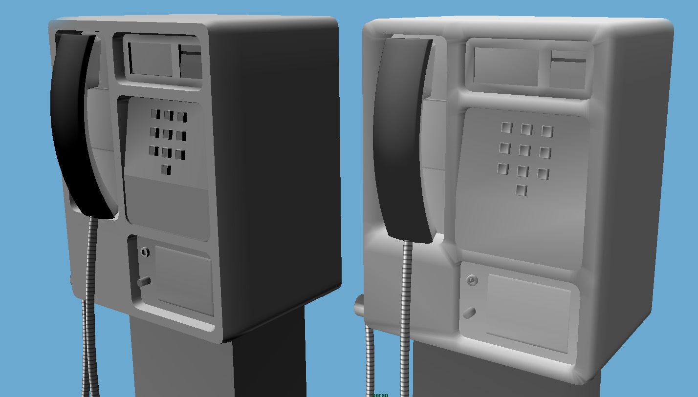
Left = Original with hard edges
Right = After adjusting brightness, hard edge data is lost
This is because the plugin is operating in Vertex component mode (the default) so it isn't respecting vertex-face data on edge boundaries. This is the default as it is faster, however you can change it from the Component Type menu:
For more information see 4.1.2 Force Component Type
6.4.4 How do I add support for my language to Vertex Chameleon?
Vertex Chameleon supports multiple langauges through a .res.mel resource files which contains all the text strings used by the plugin. You simply need to copy this resource file and modify the text strings.
Maya will then run the plugin in your language.
If you do translate the plugin into your language please let us know so we can share it with the rest of the community.
7. Support
Website
Vertex Chameleon has it's own website where updates and news can be found:
http://www.RenderHeads.com/portfolio/VertexChameleon/
Discussion Forum
Use the discussion forum to post your questions, opinions, submit feature requests, report bugs and show off ways you've used the plugin:
http://www.RenderHeads.com/forum/viewforum.php?f=5
RenderHeads Details
For further support please contact the developers directly:
Web: www.renderheads.com
Email: contact@renderheads.com
Phone: +447970692070
Copyright © 2007-2012 RenderHeads Limited. All rights reserved.